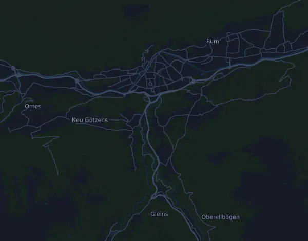

Innsbruck Alpine Trailrun Festival – K85 Heart of the Alps Ultra 85,6 km
- Distanse
- 85,6 km
- Høydemeter
- ↑ 5 157 m
- Høyeste punkt
- 1 652 moh.
- Underlag
- Terreng og sti
- Karakter
- Fjellpreget
- Start
- kl. 00:00
Høydeprofil
Forbered deg med Mila
Mila er en løpecoach i en app. Legger du et løp inn i planen din, planlegger coachen ukene fram til start etter formen din, og gir deg en tidsprognose og en plan for tempo, drikke og energi i løypa.

Rett økt. Rett dag.
Løypa

Om løypa
adidas Innsbruck Alpine Trailrun Festival – K85 Heart of the Alps Ultra er et terrengløp på 85,6 km i Innsbruck, Østerrike. Løypa har 5 157 høydemeter oppover og 5 156 nedover, 60 m per km, og regnes dermed som fjellpreget. Høyeste punkt ligger 1 652 moh. og laveste 559 moh.
Den største stigningen starter ved km 20,7: 801 høydemeter på 7,2 km med 11,2 % i snitt, opp til 1 633 moh. Totalt har løypa 45 stigninger på minst 25 høydemeter; den siste starter ved km 77,4.
I Mila-appen beskriver coachen løypa i detalj på ditt språk og planlegger tempo og energi for den.
Stigninger
| Starter ved | Lengde | Høydemeter | Stigning | Topp (moh.) |
|---|---|---|---|---|
| km 0,5 | 2,3 km | 69 m | 3,0 % | 647 |
| km 2,8 | 700 m | 114 m | 16,3 % | 754 |
| km 3,5 | 350 m | 39 m | 11,1 % | 789 |
| km 3,9 | 1,9 km | 173 m | 9,2 % | 957 |
| km 7,4 | 330 m | 33 m | 10,0 % | 923 |
| km 7,7 | 1,1 km | 239 m | 21,9 % | 1 161 |
| km 9,8 | 290 m | 53 m | 18,3 % | 1 100 |
| km 14,5 | 3 km | 128 m | 4,3 % | 711 |
| km 18,0 | 1,3 km | 83 m | 6,6 % | 773 |
| km 19,6 | 830 m | 61 m | 7,3 % | 829 |
| km 20,7 | 7,2 km | 801 m | 11,2 % | 1 633 |
| km 28,0 | 80 m | 28 m | 35,9 % | 1 644 |
| km 28,3 | 160 m | 26 m | 16,8 % | 1 615 |
| km 28,9 | 350 m | 33 m | 9,3 % | 1 572 |
| km 29,4 | 160 m | 27 m | 16,6 % | 1 591 |
| km 29,6 | 570 m | 74 m | 13,0 % | 1 648 |
| km 30,7 | 350 m | 27 m | 7,5 % | 1 637 |
| km 31,6 | 210 m | 26 m | 12,3 % | 1 649 |
| km 36,0 | 190 m | 39 m | 20,4 % | 1 482 |
| km 41,4 | 530 m | 44 m | 8,2 % | 884 |
| km 42,0 | 100 m | 25 m | 26,0 % | 899 |
| km 43,4 | 190 m | 47 m | 24,2 % | 902 |
| km 44,5 | 250 m | 26 m | 10,2 % | 885 |
| km 44,8 | 100 m | 39 m | 39,4 % | 903 |
| km 45,7 | 100 m | 30 m | 30,4 % | 901 |
| km 46,0 | 50 m | 27 m | 50,2 % | 905 |
| km 48,8 | 430 m | 34 m | 7,9 % | 746 |
| km 52,0 | 250 m | 29 m | 11,9 % | 663 |
| km 52,3 | 80 m | 42 m | 51,1 % | 699 |
| km 52,4 | 20 m | 25 m | 121,2 % | 651 |
Før start
Starttider
- kl. 00:00
Kilde: innsbruckalpine.at, hentet 15. oktober 2026
Vanlige spørsmål
Når går Innsbruck Alpine Trailrun Festival – K85 Heart of the Alps Ultra 85,6 km?
Innsbruck Alpine Trailrun Festival – K85 Heart of the Alps Ultra 85,6 km går lørdag 8. mai 2027. Sjekk dato og starttid hos arrangøren.
Når starter Innsbruck Alpine Trailrun Festival – K85 Heart of the Alps Ultra 85,6 km?
Ifølge arrangøren: kl. 00:00.
Hvor langt er Innsbruck Alpine Trailrun Festival – K85 Heart of the Alps Ultra 85,6 km, og hvor mange høydemeter er det?
Løpet er 85,6 km langt med 5 157 høydemeter oppover og 5 156 nedover. Høyeste punkt ligger 1 652 moh.
Hvordan er løypa i Innsbruck Alpine Trailrun Festival – K85 Heart of the Alps Ultra 85,6 km?
Løypa regnes som fjellpreget, med 60 høydemeter per km i snitt. Den har 45 stigninger på minst 25 høydemeter; den største starter ved km 20,7: 801 høydemeter på 7,2 km. Start og mål ligger på samme sted. Underlaget er terreng og sti.
Hvordan legger jeg opp farten i Innsbruck Alpine Trailrun Festival – K85 Heart of the Alps Ultra 85,6 km?
Sikt på en jevn innsats heller enn et jevnt tempo: la farten gå ned i motbakkene, hent den inn igjen når det flater ut, og hold igjen de første kilometerne. De største stigningene starter ved km 3,9, km 7,7, km 20,7 og km 77,4. I Mila får du en tempoplan for akkurat denne løypa etter din egen form.
Flere løp som dette
Flere løp i nærheten
- Salzburg Marathon 42,2 km23. mai 2027 · Salzburg, Østerrike
- Vienna City Marathon 42,7 km18. april 2027 · Wien, Østerrike
- Oberbank Linz Donau Marathon (Marathon) 42,2 km11. april 2027 · Linz, Østerrike
- mozart 100 by UTMB – mozart Ultra (84 km)5. juni 2027 · St. Gilgen, Østerrike
- Großglockner Ultra-Trail | GGUT 110 km23. juli 2027 · Kaprun, Østerrike
- KAT100 by UTMB – Endurance Trail 75 km6. august 2027 · Kitzbühel, Østerrike
Forbered deg med Mila
Rett økt. Rett dag.
Opplysningene kommer fra løypefilen og arrangørens informasjon. Sjekk dato, starttider og regler hos arrangøren.
Mila er ikke tilknyttet, sponset av eller godkjent av arrangøren eller løpets sponsorer. Navn og varemerker tilhører sine eiere. Arrangør eller rettighetshaver? Be om endring eller fjerning